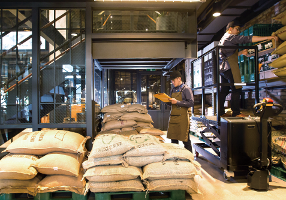

CAFÉ LUNE만의 특별함
COFFEE
커피 본연의 신선함을 제공합니다.
다년간 축적된 CAFÉ LUNE만의 원두 관리 노하우는 단순한 기술 그 이상입니다
원두의 생육 환경부터 수확, 선별, 보관, 그리고 로스팅 커피 한 잔에 담기는 모든 과정
에 세심한 철학과 정성이 깃들어 있습니다.
CAFÉ LUNE은 각 원두가 지닌 고유의 향미를 왜곡 없이 전달하기 위해
자연의 흐름을 거스르지 않고, 본연의 풍미를 최대한 살리는 정제된 방식만을 고수합니다.
이러한 원칙 아래, 우리는 언제나 신선하고 깊이 있는 커피만을 제공합니다. 한 잔을 마주하는 순간,
그 안에 담긴 시간과 정성을 느끼실 수 있을 것입니다.
원두의 생육 환경부터 수확, 선별, 보관, 그리고 로스팅 커피 한 잔에 담기는 모든 과정
에 세심한 철학과 정성이 깃들어 있습니다.
CAFÉ LUNE은 각 원두가 지닌 고유의 향미를 왜곡 없이 전달하기 위해
자연의 흐름을 거스르지 않고, 본연의 풍미를 최대한 살리는 정제된 방식만을 고수합니다.
이러한 원칙 아래, 우리는 언제나 신선하고 깊이 있는 커피만을 제공합니다. 한 잔을 마주하는 순간,
그 안에 담긴 시간과 정성을 느끼실 수 있을 것입니다.
